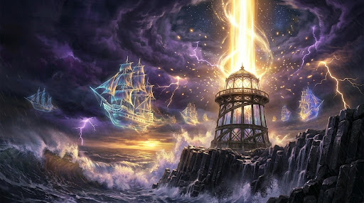

The entire Glass Lighthouse rings like a struck tuning fork as raw lightning converges upon the summit dome. Under your hands, the brass controls burn hot as the Great Prism spins faster and faster, drinking in the fury of the tempest. Beyond the rain-lashed glass, the clouds part just enough to reveal why the Singing Gale returns each century: a spectral armada of centuries-lost ships hangs suspended between sea and sky, trapped in the rift between worlds and waiting for the beacon's command. Beside the prism, the spectral form of Keeper Vane salutes you, fading into the rising brilliance as the choice falls solely to your hands. The crystal lens is at maximum capacity, one turn of the dial to the left will focus the beam into a golden bridge across the horizon; one turn to the right will shatter the prism outward and unmake the storm forever.